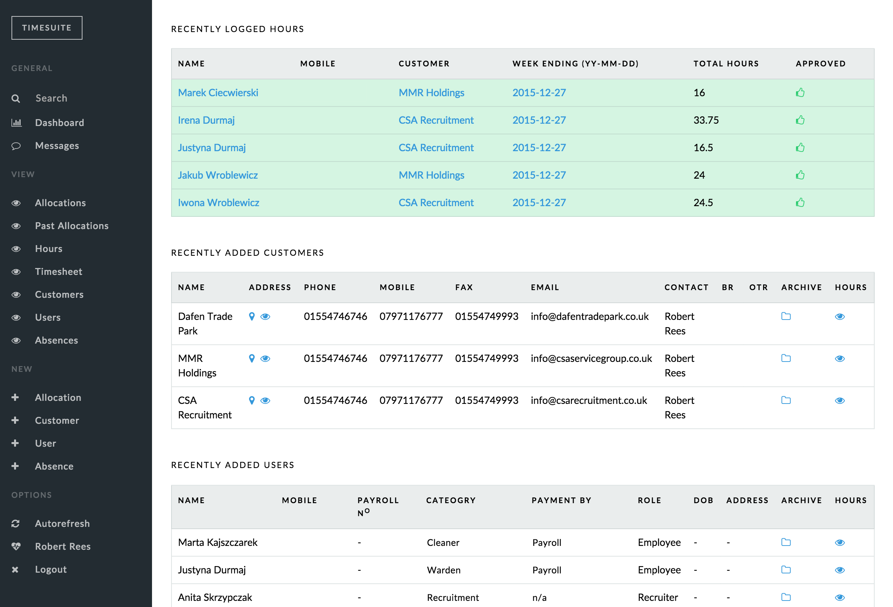
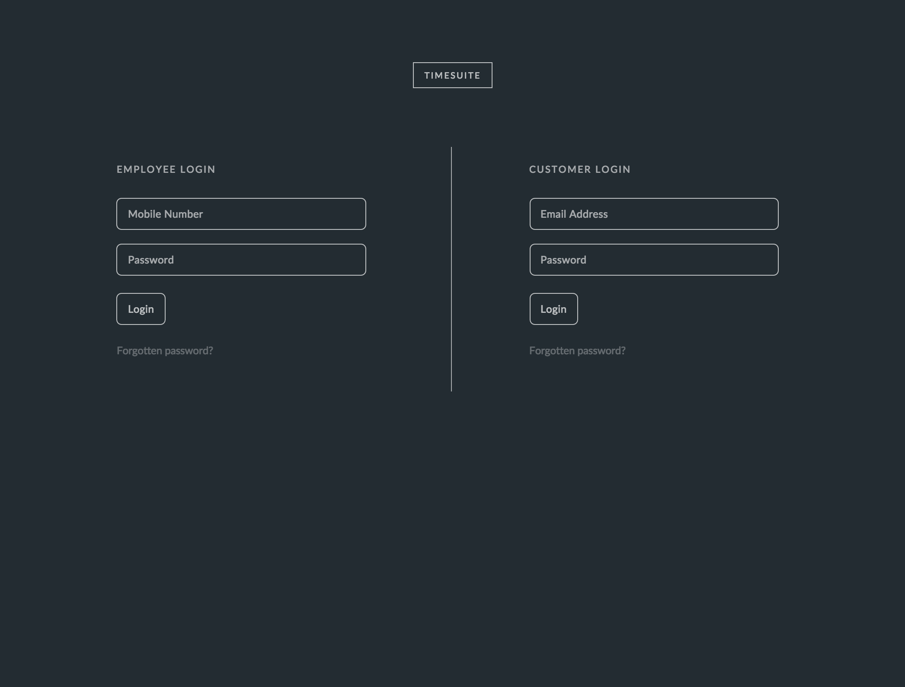
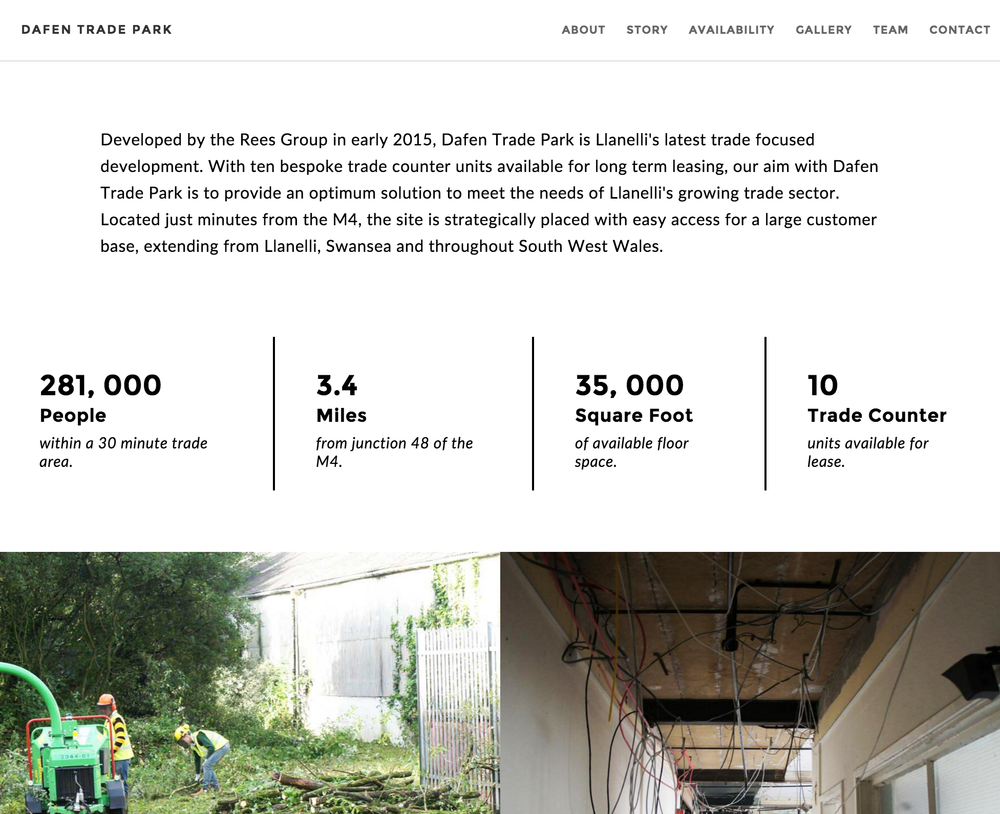
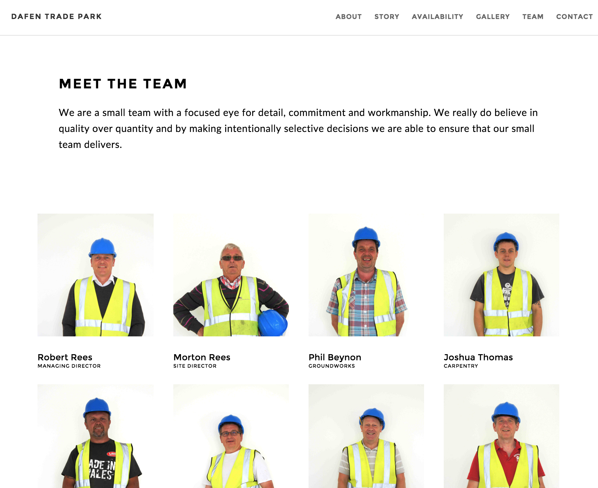
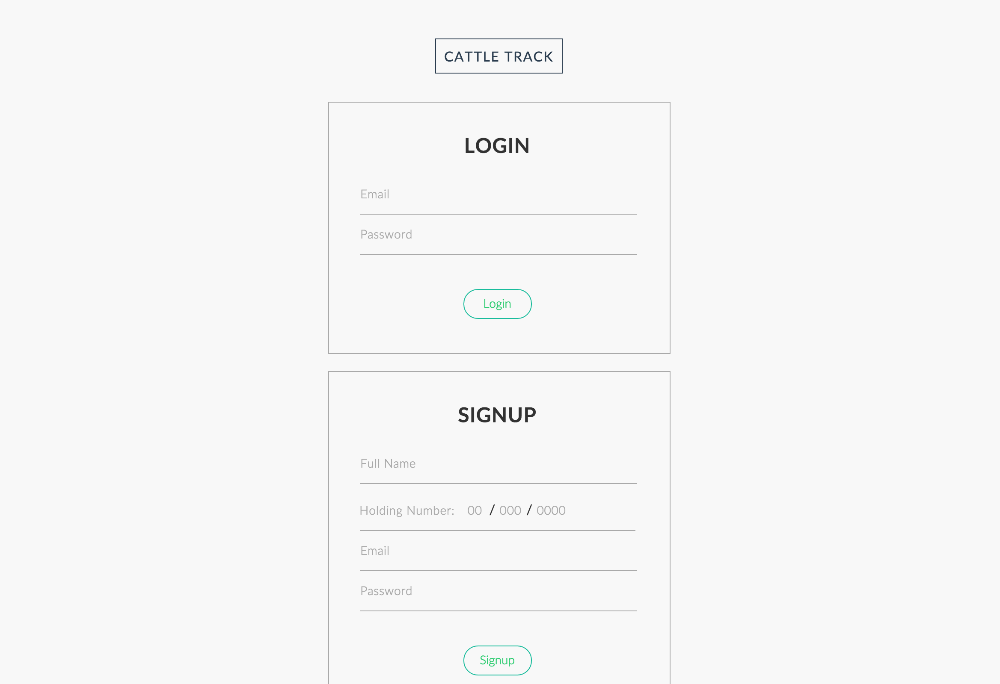
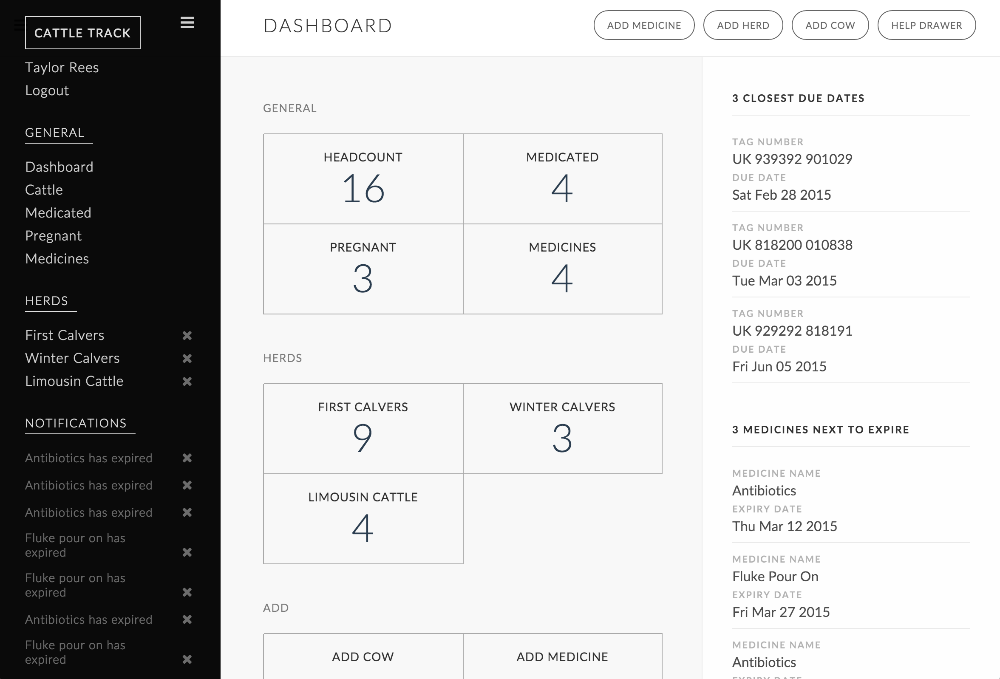
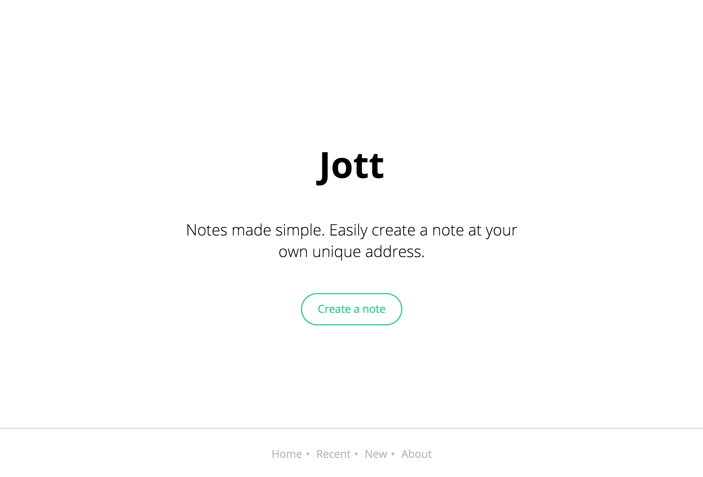
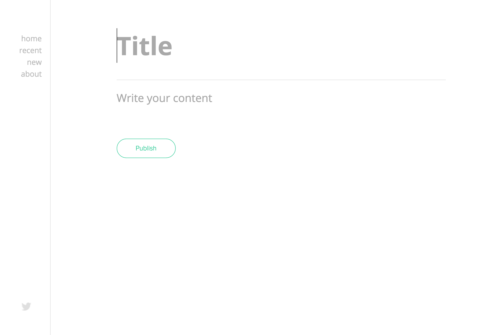

Throughout the summer of 2015 I worked for a recruitment agency designing a bespoke time logging application. I worked as the sole designer / developer for the agency, building a unique solution that would fit their requirements. The result of this work is Timesuite.
 As part of this project I had to design and develop a system in which employees of the company could login securely to record their hours for a particular working week. These hours would then require two methods of approval. First, a recruiter would be required to review the employees working hours before sending them for final review and approval to the customer of the recruitment agency.
Using Timesuite, the agency are also able to allocate employees to specific jobs at specific times. The system also knows when an employee has already been allocated, and suggests that the recruiter selects an alternative employee. You can see the video walkthrough I created for employees below to get an understanding of how the system works.
During the summer of 2015 I was asked whether I would be interested in undertaking some freelance web design work for a new, local company. Of course I was thrilled by this opportunity and so I agreed to create a modern, single page design that fit the modern asthetic they were looking to achieve. The site is now live at dafenpark.co.uk.
 Initially the company had requested that I design and develop the site. However, as time progressed, it became apparent that the imagery that I had to work with was of a poor quality and this was having an extremely negative effect on the look and feel of the designs.
Worried, I raised this issue with the managing director and we discussed what could be done to resolve the issue. I mentioned that I had an interest in photography and that was all it took, I was now responsible for the photography of the site. It also became my role to write the content for the site.
During my A-Levels it became apparent to me that there was a severe lack of modern, data-driven software systems available to the agricultural market. This was especially true for the smaller livestock farmers within my local community. With this in mind I decided to develop Cattletrack to try and solve the problem.
 Within Cattletrack, farmers are provided with at a glance statistics about their cattle. They can discover instantly how many cattle are currently on a medication plan, when the plan is due to end and what medicines are due to expire. The system will also notify farmers when a cow requires medicaion or when a medicine has expired.
Cattletrack uses familiar language to make the system as easy to use as possible. For example, the use of herds to group cattle is something that will come naturally. I have aimed to make adding cattle, medicines and herds as easy as possible. Please see the getting started video below to learn how Cattletrack works.
Jott was originally thought up during my AS studies because I found that there was no quick and easy way for me to share resources with my peers. The idea caught on and Jott was actually featured on Product Hunt in its early days.
 Every service I tried to use forced me to sign up just to create a simple note, then when I wanted to share that with anyone they too had to sign up. I would have to add the recipients to a list in order for them to see the note or share an extremely unattractive URL. This was not ideal, so I set out to build a tool that I could use to help me study more effectively. This then progressed slowly into a tool I now call Jott.
I like to think that it has the essence of a post-it note because all I wanted it to do was store information for a finite time and then, when it is no longer required, the information can be discarded, to save space, similar to what we do on our desks at home. This is where the feature that causes notes to disappear after 30 days of inactivity came from.